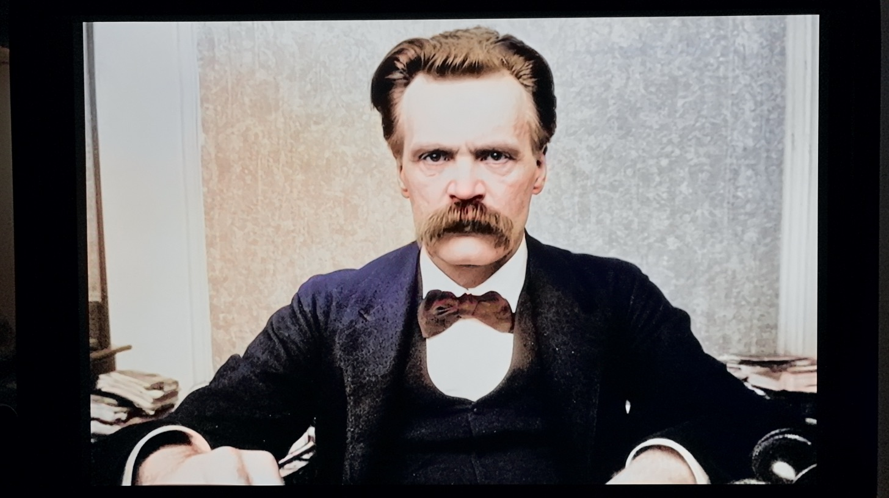

Unscripted TV
A live AI studio. An AI character streams on YouTube, reads the live chat and answers with a lip-synced talking face. The first show is Nietzsche, live from his study.
Everything runs on one Mac, with no cloud GPU and no paid service, so a show costs about nothing to run.

How it works
- ChatMessages arrive from YouTube and Twitch. Each one is sorted by what it tries to do: ask, joke, or steer the show.
- ShowA runtime decides what happens next: answer a viewer, comment on fresh news, or go deeper into one topic.
- BrainA language model writes the reply in the character's voice, one sentence at a time. It runs locally by default and can be switched mid-show.
- VoiceEach sentence becomes speech with a local text-to-speech model.
- FaceWav2Lip moves the mouth over the character's blinking loop, so the face speaks in sync.
- On airThe video goes to OBS or straight to YouTube and Twitch. When nobody is speaking, an idle loop keeps the stream alive.
The director
A control room in the browser lets me run the show while it is live. I can send the character hidden notes that it follows without saying so on air, start a deep dive on a topic, or open a theme show that lasts hours.
The world comes in through news wires, trends, Reddit, Wikipedia and "on this day" history, each refreshed on its own clock, so the character reacts to things that are minutes old.
A platform, not one character
A performer is data, not code. The character, the set, the show format and the audience are separate files. A second performer, Bach, was added with two files and no change to the program.